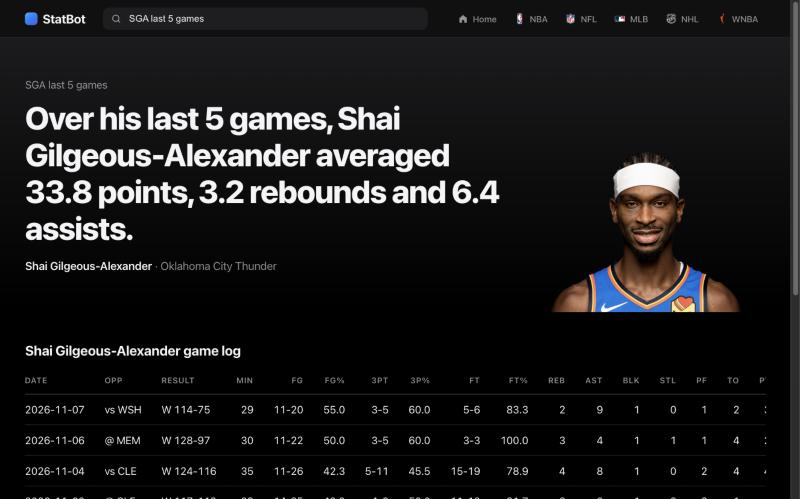

03
Sports Stats Query Engine
Ask a sports question in plain English and get a one-sentence answer with the stats behind it. It also has live scores, a page for each league, and a Gamecast and box score for every game.
- 7
- leagues covered
- 52 / 52
- benchmark questions answered
- up to 88%
- faster responses, after caching

What it does
- Search. Player stats, recent games, leaderboards, comparisons, team records, standings and scores. For example
Jokic vs Embiid rebounds 2025-26orwho led the NBA in assists in 2025-26. - Home page. Today's games, a scoreboard row for every game in progress that refreshes every 30 seconds, and league leaderboards you can click to run as a question.
- League pages. Scores by day (or by week for the NFL), standings with the columns each sport uses, and eight stat leaderboards per league.
- Game pages. A scoreboard, a live Gamecast (a base diamond for baseball, a field with the ball spot for football), play-by-play, a win probability chart, and an ESPN-style box score.
- Leagues. NBA, WNBA, NFL, MLB, NHL, college football and men's college basketball.
How it's built
- A rule-based parser, not an AI service. It picks out the league, player or team, stat, season and question type, looks the data up on ESPN, and writes the answer from templates. Answers are fast, free and the same every time.
- One line per stat. Stat names, synonyms and their ESPN fields live in a single file, so making a new stat searchable means adding one line.
- It doesn't guess. Questions it can't answer reliably, such as single-game records or career highs, get a short message with example questions instead.
- Streaming answers. The search endpoint streams its progress steps and then the answer as NDJSON, so the page shows what it's doing while it works.
- Caching. The server caches ESPN responses: about 5 minutes for stats and leaderboards, 15 seconds for live games and 10 seconds for game pages. Many visitors don't multiply requests to ESPN.
- Shareable searches. The question is kept in the URL, so a link opens the same answer.